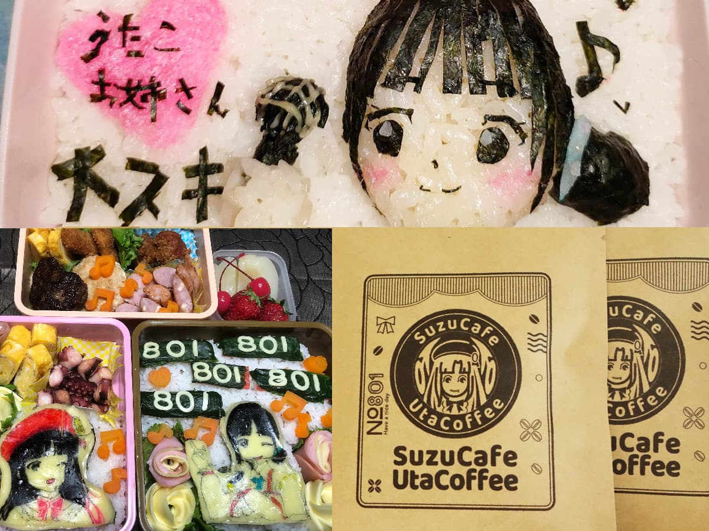

このサイトは、にじさんじ所属のバーチャルライバー鈴鹿詩子（すずかうたこ）が2024年6月12日をもって卒業するにあたり、6年3ヵ月の活動の軌跡を残すべく、ファンが有志が作成した非公式ファンサイトです。
ANYCOLOR株式会社様及び、にじさんじプロジェクトとは一切関係ございません。
Utako's Profile
鈴鹿詩子とは
よいこのみんなー
こーんにちはー！
通称：詩子お姉さん
ファンの総称：うたっこ
誕生日：2月24日 永遠の26歳
2018年3月、にじさんじ二期生の「うたのおねえさん」としてデビュー。
デビュー配信から腐女子、ショタコン、婚活中などの属性が明らかになり、さらに伝説の801板 vs VIPの大戦に参加した生き証人であることが発覚。その際に発した「お尻見せなさいよ」は詩子お姉さんを代表するフレーズとなる。
配信でBLゲームをプレイしたところ、にじさんじ初（VTuberでも2例目）のBAN（後に誤BANと判明）を受けるなど話題になり、月ノ美兎に続く逸材として注目される。
その後は「ネコトモ」や「もじぴったん」などの配信を通じて下ネタがさらに先鋭化、いつしか「にじさんじの最低ライン」と呼ばれる存在に。卒業発表の際の公式の紹介文ですら「特異なキャラクターや言葉選びで配信を盛り上げ」などと言われてしまう。
ここまでだとただのヤバい人だが、実は非常に真面目で、エロいことは言っても人を傷つけるようなことは絶対に言わない優しい性格。
特にファンをとても大切にしてくれていて、その誠実さとファンを見守る愛の深さはまるで聖母のよう。
それでいて自分の欲望には忠実だったり、ちょっと天然でポンコツだったりと、様々な側面を見せてくれるのも魅力。
配信では常に視聴者を楽しませることを第一に考えてくれていて、同期の家長むぎちゃんが「あのクオリティをずっと維持しているのはすごい」と語ったことも。
また、最初はネタ枠だったASMRの勉強を頑張り、音声作品を販売できるようになるまで上達するなど、努力家な一面もある。
他にも多彩な才能を持ち、元ボカロPとしての経歴から自ら作詞作曲したオリジナル曲を活動初期よりリリース。まだオリジナル曲を持っているライバーが少ない時代から外部イベントにも積極的に出演した。
ガリベンガーVやプロジェクトVといった地上波のテレビ番組にも出演を果たし、さらに「エルピス」というドラマでは詩子お姉さんのファングッズが小道具として大量に使われて話題に。
恐らく、VTuberとして腐女子であることを大々的に公言した最初の存在であり、その多大な影響から近年の後輩ライバーにはレジェンドと呼ばれることも。
にじさんじに応募したきっかけは月ノ美兎を見て衝撃を受けたからで、同じく影響を受けてにじさんじ入りした剣持刀也やリゼ・ヘルエスタらと共に「美兎チルドレン」とも呼ばれる。
2022年12月にNIJISANJI ENからデビューしたライバー、狂蘭メロコはにじさんじを目指したきっかけを詩子お姉さんの影響だと公言。ここに「詩子チルドレン」が誕生した。
2024年5月23日、にじさんじ卒業を発表（メンバー限定配信では2日前に告知）。多くの人が衝撃と共にお別れを悲しんだ。
History
詩子活動年表
- 2018
-
-
2018/03/13
Mirrativにてデビュー配信
にじさんじ二期生として初配信。家長むぎ、ギルザレンIII世に続き3番目。
配信前は清楚な歌のお姉さんだと思われたが、初回配信でショタコン、BL大好き、元ボカロPなどの経歴が明らかになり視聴者を震撼させる。 -
-
2018/05/25
万楽えね出所祝いに月ノ美兎と参加
-
2018/12/27
大清楚選手権
じさんじMIX UP!!で大清楚選手権を開催。月ノ美兎・鈴鹿詩子・シスタークレア・雪汝の4人で大清楚を争う。憧れの美兎様と再びの共演となった。月ノ美兎は電流の流れる嘘発見器を異常に怖がっていたが、数年後に電流NGであることが明らかになった。
-
- 2019
-
2019/01/08
詩子のMorning Radio
珍しく早朝に行われた配信(全1回)
朝であっても話の内容は普段通りであり、もはや深夜32時ラジオ。眠そうな詩子お姉さんが見られる貴重な回。 -
-
2019/04/23
初の3Dお披露目配信
夢のひとつであった3D化を達成。当時のにじさんじでは3Dをもらえるのは当たり前ではなく、3Dの技術も過渡期だった為に配信でできることも限られていた。そんな中でも後に定番となる土下座のポーズなどを披露。その可愛さからうたっこが歓喜したのはもちろんシスター・クレアさんも「どこからどう見ても可愛いです……」とコメントを残した。
-
2019/08/14
旅行先のバリから妹子と姉妹配信
家族旅行で訪れていたバリ島から妹子と配信。旅行中の家族エピソードなどが披露され、ひさしぶりの妹子の登場に視聴者も喜んだ。コメントでバリタチ王だからバリなの？と聞かれ妹子にバリタチについて説明をした。
-
2019/12/10
20万人感謝企画AS○R
本人から切り抜きも上がっている伝説のAS○R。監禁シチュに秒で順応するうたっこ、髪を梳かせば羅生門、耳かきをすればピッキング、何を聞かされてるのか分からないBL体験談などASMR界に一石を投じた(かもしれない)。
- 2020
-
2020/04/05
Shout in the Rainbow ! 追加難波公演開催
コロナ禍で無観客公演となる。ライブ中に発表された鈴鹿詩子オリジナル曲3曲目『U・S』が発表され、その歌詞で多くのうたっこを泣かせた。
ライブ前夜には出演者全員でホテルの部屋からツイキャス配信を行う。
ライブ後、夜のホテルでは鍵をインキーしてしまいフロントであたふたする詩子お姉さんが委員長によって目撃される。委員長と詩子お姉さんは仲良く寝坊し、延長料金を支払った。 -
2020/07/20
詩子のオカズの募集
「詩子が興奮できるえっちなオトコ♂の絵コンテスト」という趣旨の企画として、リスナーからイラスト募集を開始。イラスト方面でもうたっこを腐女子腐男子として育て始める。同年の8/17及び8/18の配信で発表され、非常に多くの人が参加し盛り上がった。
後編では突如つくしあきひと先生が現れスパチャをする。好きなキャラとしてレグくんを挙げていた詩子お姉さんにとって歓喜の配信となった。 -
2020/10/22
にじオネアをやろうとして配信事故
にじさんじに関するクイズゲーム「にじオネア」を配信でやろうとするも、開始10分はゲームのBGMをバック熱いBL語り。ゲームを始める前にライバースマホの充電が切れ、顔が固まったためgif詩子を投入。ゲームを開始するも画面が映らない畳状態で、しかもクイズの答えを見ないようコメントを消したため、気付くことができず、ひたすら詩子の声だけが流れる配信に。絶望的な空気に包まれたが、コメント欄に森中花咲が登場。お姉さんに電話をかけ事故を教えることに成功した。
-
2020/10/24
IMAGINATION vol.3に参加
VTuberコンピレーションアルバムシリーズ「IMAGINATION」の第3弾に参加。ソロで「気分上々↑↑」、愛宮みるくとのデュエットで「じょいふる」の2曲に参加。気分上々↑↑は配信でも何度か歌われた。他にも周防パトラや犬山たまきなど馴染みのあるメンバーも参加している。
- 2021
-
2021/1/11
チャンネル登録者数40万人突破
登録者40万人耐久配信を実施。しかしなぜかVRのAVを視聴し、その途中で登録者数が突破しても気づかずAV鑑賞を続けた。また気づいてからももひとしきり喜んだ後、再びAV鑑賞を再開した。
-
2021/04/10
妹子の新しい姿お披露目
運営さんに許可を頂いた上で個人的に妹子の立ち絵を絵師に発注、それまでの詩子作の立ち絵から変更となりお披露目された。配信では姉妹の子供の頃のエピソードも語られ、プリンセスごっこなる遊びをしていたことが明らかになった。
-
2021/4/17
剣持刀也のSharpness Radio第20回にゲスト出演
同期である剣持刀也との対談回。女子校出身者の腐女子VS男子校出身者の百合厨で戦いが繰り広げられた。また、バーチャルラップバトルでは、健全な配信を行う剣持刀也のチャンネルでエ◯漫画の題名を読み上げ、ピー音だらけにした。
- 2022
-
2022/11/01〜02
にじさんじフェス2022
詩子お姉さんは「詩子の秘密のドリンク」の考案を担当。その意味深な名前と見た目ながら大人気で即完売する。他には鈴谷アキくんと場内アナウンスを担当。
細かすぎて伝わらないライバーものまね選手権では野良猫とフミ様によって詩子お姉さんのスパチャ読みの真似が披露される。 -
2022/12/25
クリスマスNKODICE配信
年内ポ○ノ禁をかけてクリスマス当日に性夜のNKODICE耐久配信。難航するも残り7分の間際で見事お○○○んを出し、皆が歓喜に包まれた。
- 2023
-
2023/08/01
801の日にAIのべりすと君とBL合同執筆
AIのべりすとを使い、視聴者から募集したシチュエーションでの小説執筆配信。あまりにも"わかりすぎた"AIの文章で興奮が止まらないお姉さんを見ることが出来る。
- 2024
-
2024/05/23
にじさんじ卒業を発表
にじさんじ公式より6月12日を持って卒業することを発表。
公式の文章で「特異なキャラや言葉選びで配信を盛り上げた」と紹介されネットニュースにもそのまま載ってしまう。また「詩子卒業」などのワードと一緒に「婚活成功」がトレンド入りし、傷心のうたっこを若干和ませた。
卒業発表の衝撃は大きく、Yahooのトレンドランキングでは1位から4位まで詩子関連が独占、にじさんじ内のみならずVtuber界全体から悲しみの声が届けられた。
Glossary
詩子関連用語集
- 僕体好
- 「僕の体を好きにして」の略称。ありがとうの意味。ネコトモ配信にてお礼の言葉として設定され、うたっこにも浸透。僕体好と略されて定着し、頻繁に使われるようになった。
- きんたまくらぶ
- もじぴったん配信で爆誕したパワーワード。一体ナニをどうする倶楽部なのかは詩子お姉さんもうたっこたちも誰も知らない。後に有志で本当に結成された。
- 詩子ライン
- にじさんじ内に存在するとされるセンシティブコンテンツに関する指標。詩子の配信での発言を基準とし、許される内容のボーダーラインとされる。宝鐘マリン、早瀬走などが使用。ホロライブにはまつりラインも存在する。
- しこT
- 「しこって寝ろ」Tシャツの略称でうたっこの正装。詩子直筆でデカデカとしこって寝ろと書かれている。嘘みたいだが、にじさんじ公式から発売された。ロンT、半袖、スウェット、各種カラー展開などバリエーションがやたら多い。うたっこのみならず変T愛好家からも注目され、御伽原江良も買うか悩んでいた。
- 詩子スイッチ
- ゲーム「Detroit: Become Human」で登場した化学兵器の起動ボタンのこと。その優しい性格から道中一貫して平和的な選択肢を選びハッピーエンドを目指してきたが、最後の最後で科学兵器の起爆装置を何も考えずに手拍子で起動してしまい、デトロイトを火の海に変えた。本人は何をしたのかもよくわかっていなかった。その後は他のライバーの配信でも起爆スイッチが詩子スイッチと呼ばれるようになった。
【４分で分かる】詩子のクソザコDetroit:Become Human
- 詩子、俺じゃ駄目だ
- 「○○、俺じゃ駄目か？」というプロポーズのフレーズの改変。お姉さんに恋人ができたり結婚したりで幸せになってほしい、その時は祝福したいという気持ちが溢れているが、その相手が自分ではいけない、もっとふさわしい人と結ばれて欲しいという無念も出ている。
「結婚してくれ、俺以外の男と」とも。
- 架空のショタコンの化け物
- 詩子のこと。お姉さんの二次創作が広くバズった際に、こんな人物が存在するわけがないという思い込みから、架空のキャラクターだと思われてしまう現象により誕生した概念。
2023/04/25に詩子自らTwitterで私は実在すると宣言。実在するショタコンの化け物となった。
- ノンケ向け
- 主に一般男性向けの作品を指す。ゲイ向けとの差別化のためよく詩子が使用、うたっこにも浸透し、ゲーム配信で詩子が望むようなBL展開にならなかった際に「ノンケ向けゲームの悪いところがでた」などとコメントされた。
- 95.3
- 詩子おねえさんのヒップのサイズ。ZOZOスーツでのスリーサイズ発表での計測値。その大きさにチャット欄で大いに盛り上がり、その数値が取り上げられた。ちなみに配信内での一番大きな数値は96センチ。
大きくて可愛らしい。
- ちょんちょこりんぼ
- サイドテール。鈴鹿家に伝わる呼び方。詩子の実の妹の『妹子』が幼少期にこの髪形をしていたため、妹子の立ち絵はちょんちょこりんぼで描かれている。
- 結婚以外何でもできる女
- ライブなど歌のおねえさんとしての本領を発揮した際にうたっこから漏れる言葉。歌もパフォーマンスもなんでも出来る。結婚だけできない。
- 待機児童
- 配信開始前に流れるコメント。メンバーシップのスタンプを組み合わせて作ることが出来る。当初は登録できるスタンプの枠が足りず「待機」しかなかった。
- ｿﾘｿﾘ
- 謝るときに使用する言葉。GTA配信などで多用し、そのあまりに雑な言いっぷりと語感のよさからハマるうたっこが続出した。尚、許してもらえるとは限らない。
- 王様ゲーム
- 詩子お姉さんの代表的な性癖のひとつ。にじさんじの男性ライバー同士で行っている様子を別室から眺めたいというのが長年の夢だったが実現しなかった。2019/06/05配信の危険な大人の呑み会では女ライバー4人で実施。詩子と雪汝がキスをすることとなった。
また、うたっこのオフ会で実際に行われ地獄絵図を生み出した。
- 漢字わかんねーけど
- 30万人耐久・黒歴史ルーレット発表会にて公開された、詩子お姉さんの大学生時代の闇日記に書かれていた一文。実際に日記では単純が「単順」、憂鬱がかけず憂が黒塗りになっているなど、本当に漢字が苦手だったようだ。その後は配信でお姉さんが漢字を読めなかった際にコメントで言われるのが定番となった。
- モブおじ
- エロ漫画に登場する竿役男性。名前のない登場人物で多くは変態で小太り、汗をかいていることが多い。2020/06/24「理想の受けと攻めを描こう。」配信内にて詩子お姉さんにより具現化され、メンバースタンプにも採用される。当初は単なるモブおじとしてのスタンプだったが、メンバー自身を表すスタンプとしても利用されるようになった。
- きっと清楚な人なんだろうなあ～
- 歌ってみた動画に散見されるすっとぼけコメント。こんなに可愛いアイドルVTuber、普段の配信もふわふわで可愛いんだろうな～。
- DD君
- 中国の男性バーチャルYoutuber、虚拟DDくんのこと。みんなの弟。日本語が堪能でスラングの知識も豊富。ショタ好きなお姉さんは当然チェックしており大ファンでもある。DD君が配信を見ていると知った時には大喜びしていた。詩子が清楚に生まれ変わるために記憶を失くした際には「お姉さんはボクと結婚していた」と謎の擦り込みを行おうとした。
- メジャーASMR
- お姉さんが配信内で使用するメジャーの音。主にスリーサイズを測る際に登場する。初期は繊維製を使っておりカラカラ音だったが、途中からスチールタイプに代わりシャープな音に。
ちなみに非公式wikiではお姉さんが測ったスリーサイズが大量に掲載されている。
- 設置ング
- セッティングの言い間違え。業者のおじさんとお姉さんがセッチングしたという事実に、全ユニコーン🦄が震えた。
- AVマジック／ゲイビマジック
- アダルトコンテンツにしばしば見られる現実では起こり得ない状況や行動のこと。あくまで演出であるため現実と混同しないよう注意喚起も含む表現。
- 少年メイドクーロ君
- 元はショタ漫画で2018にVtuberとしてもデビュー。詩子は当然履修済み。フミ様が後にその存在を知った際に、元々にじさんじでクーロ君をフォローしていたのが、月ノ美兎、鈴鹿詩子、文野環であることが発覚し役満みたいなメンバーと言われた。
Utako Switch
詩子スイッチ
Activities
うたっこの活動
-
- お誕生日応援広告 2022
- にじさんじで応援広告の受付が開始されたのに合わせて有志が企画。手探りでの企画進行だったが乙女の聖地、池袋駅で無事に掲出。達成感と感動に包まれた。
-

- お誕生日応援広告 2023
- 翌年も応援広告企画を実施。今回は経験を活かし規模を拡大、クラファンを開催し池袋、梅田、名古屋、広島、福岡、札幌の7箇所での掲出に成功。クラファン目標達成時の金額は454500円だった。
-

- キャラ弁
- 2022/05/25に月ノ美兎のキャラ弁選手権
- 【キャラ弁選手権】にじさんじ愛を料理に詰め込めッ！！！
-

- 薬物OFPK
- 2022年のある日、詩子おねえさんから「企業向けの薬物乱用防止教室のナレーションをしていた」と衝撃の告白があった。その幻のボイスを聞く為に有志が企画実行した大規模オフ会（OFPK＝オ●パコ）のこと。最終的にうたっこ が40人ほど集まり、外部講師の方と熱く議論を交わしつつ、いつも通りの淡々とした口調で「キ⚫︎セク」と発するおねえさんのナレーションに肩を震わせていた。
- 参考リンク
Fan Art
ファンアート
うたっこの愛の結晶。
クリック（タップ）で拡大します。
{kind=link}
{kind=link}
{kind=link}
{kind=link}
{kind=link}
{kind=link}
Special Thanks
制作協力
お名前 / お名前 / お名前 / お名前 / お名前 / お名前 / お名前 / お名前 / お名前